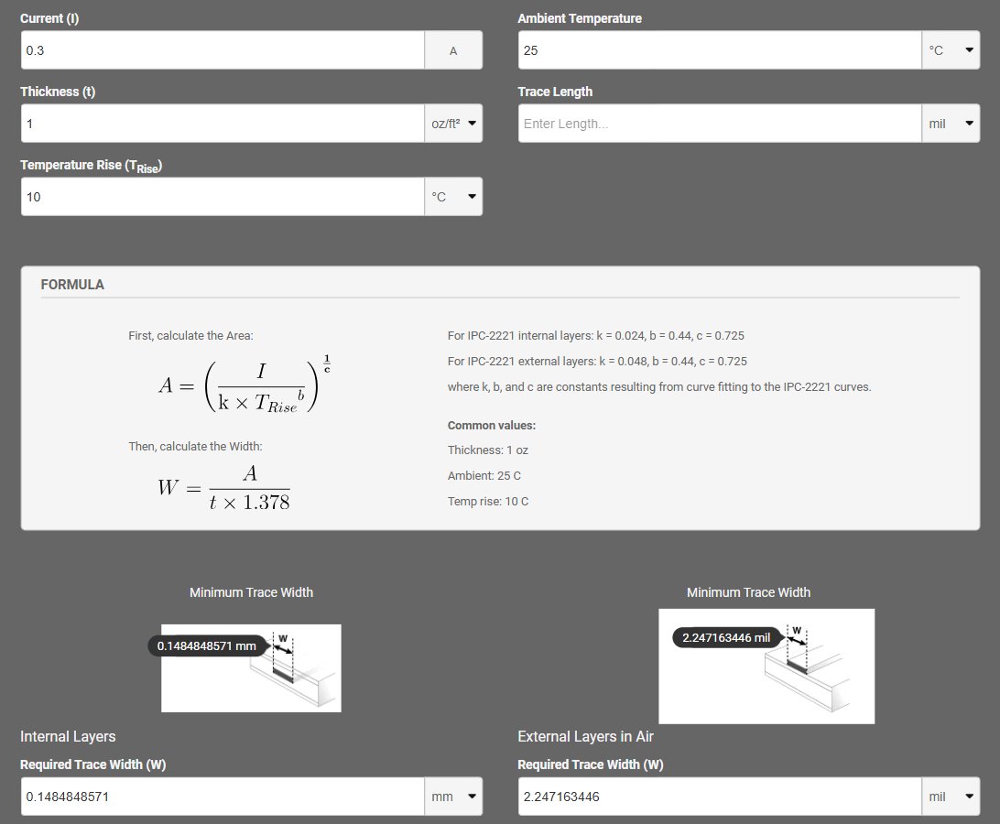

Determining the DC/DC Converter Output Current Needed
Requirements
- Input Voltage: 12V-48V
- Output Voltage: 5V
Determining the Required Input Current and PCB Trace Thickness for Switching Converters
Chip parameters
- Chip of Interest: R-78HE-0.3
- DC-DC switching converter, not linear regulator
- Input Voltage Range: 6.5V - 48V
- Output Voltage: 5V
- Output Current: Up to 300mA
- Efficiency: Up to 83%
Power Conversion Equations
(1) \(P_{\text{out}} = P_{\text{in}} + P_{\text{losses}}\)
(2) \(Efficiency = \frac{P_{\text{out}}}{P_{\text{in}}}\)
(3) \(P_{\text{in}}= V_{\text{in}} \times I_{\text{in}}\)
(4) \(P_{\text{out}}= V_{\text{out}} \times I_{\text{out}}\)
- Plugging in equation (3) into (2) and isolating for \(I_{\text{in}}\) results in:
Finding the Maximum Input Current
-
Known: \(V_{\text{out_max}} = 5V, I_{\text{out_max}} = 300mA\)
\(P_{\text{out_max}} = 5 \times 300m = 1.5W\) -
Two cases are considered since the efficiency of the converter changes with the input voltage. \(V_{\text{in_max}} = 72\), Efficiency = 72%
\(I_{\text{in}} = \frac{1.5W}{72 \times \text{0.72}} = 0.029A\)
\(V_{\text{in_min}} = 6.5\), Efficiency = 83%
\(I_{\text{in}} = \frac{1.5W}{6.5 \times \text{83}} = 0.278A\) -
Therefore, the maximum input current is 278mA. This is consistent with the inverse relationship between voltage and current in a DC-DC converter. Although the input current (278mA) is lower than the output current (300mA), the input voltage (6.5V) is higher than the output voltage (5V). This behavior is typical of switching converters, which take advantage of the complementary relationship between input and output voltage and current.
-
However, to be conservative, let’s say the chip consumes 300mA which is the same as the output current. This is a standard technique that is employed to approximate the current drawn from the converter especially for higher efficiencies. We could have utilized this approach, but now we know how to solve for the max input current for any converter.
-
The maximum input current is 0.3A and we are designing for a 1 oz copper thickness

- A required trace width of 0.148mm (5.83mils) is obtained